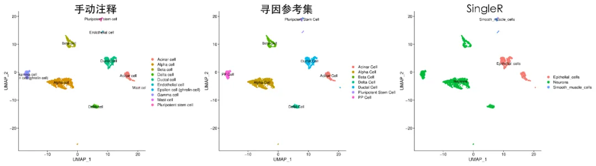
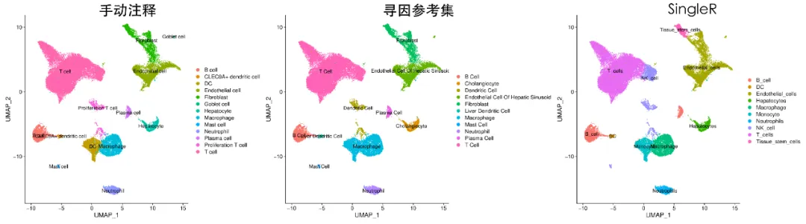

零代码单细胞| 细胞注释
原文：https://mp.weixin.qq.com/s?__biz=MzAwMzIzOTk5OQ==&mid=2247510401&idx=4&sn=88cb0b8dc42f5348c61c07daec5a9667&chksm=9b3cd0d1ac4b59c78011a557a474491fdc58bd9bcc69bb2ce504c130ed6f63d1f967888b7074#rd 合集：单细胞云平台
导语 .
在单细胞数据分析中，细胞注释扮演着至关重要的角色。为了准确定位特定细胞类型，通常需要查看特异Marker基因的表达情况，并进行多轮细胞注释以选择最佳结果。然而，频繁的切换和反复保存细胞注释结果“令人头秃”。现在让SeekSoul ® Online的细胞注释帮您实现将多次细胞注释的结果整合，点击即可查看所有结果，为您提供更准确、更高效、更快捷的细胞注释结果！
云 平台访问链接：https://seeksoul.online/t_static/Biomamba/Biomamba.html
各位同学需要联系您的专属在线客服，获取demo数据后，进行操作学习。

** **
第四讲：双管齐下， SeekSoul® Online轻松识破细胞“⾝份”
精华复现
自动注释来辅助，快速，智能！
自动注释的原理主要是通过将所研究的单细胞数据与注释参考数据集进行比较来对细胞进行注释，对参考数据集具有很大的依赖性。
寻因生物整理了近几年发表的单细胞转录组文章，构建了包括约62种组织类型的数据库，1分钟即可实现各种组织的自动注释，其准确性达到90%以上。
** **

人胰腺三 种注释结果对比
人肝脏三种注释结果对比
我们分别对比了人胰腺和肝脏组织使用手动注释、寻因数据库注释和SingleR自建库注释的结果，显示寻因数据库的结果与手动注释结果一致性较高，注释准确性远大于singleR数据库。
用鼠标标注细胞类型的新方式
SeekSoul Online手动注释模块基于可视化界面和鼠标操作， 无需编写代码，只需通过简单的鼠标操作就能完成细胞功能注释的过程。
SeekSoul Online内增置多种参考基因集， 帮助您快速调用相关细胞类型或功能的基因集，同时也可自定义基因集进行展示。
看完 视频相信您会对细胞注释的过程有所了解，再仔细练习一下就会对细胞注释的过程手拿把掐，那么下面就是我们的作业环节。**期待你在demo数据中实际感受一下细胞注释的过程，**并且将内容回传给云平台小助手。 下次课程我们再见面！
本次作业
使用demo数据进行自动注释和手动注释，并将自动注释和手动注释结果以报告的形式提交。